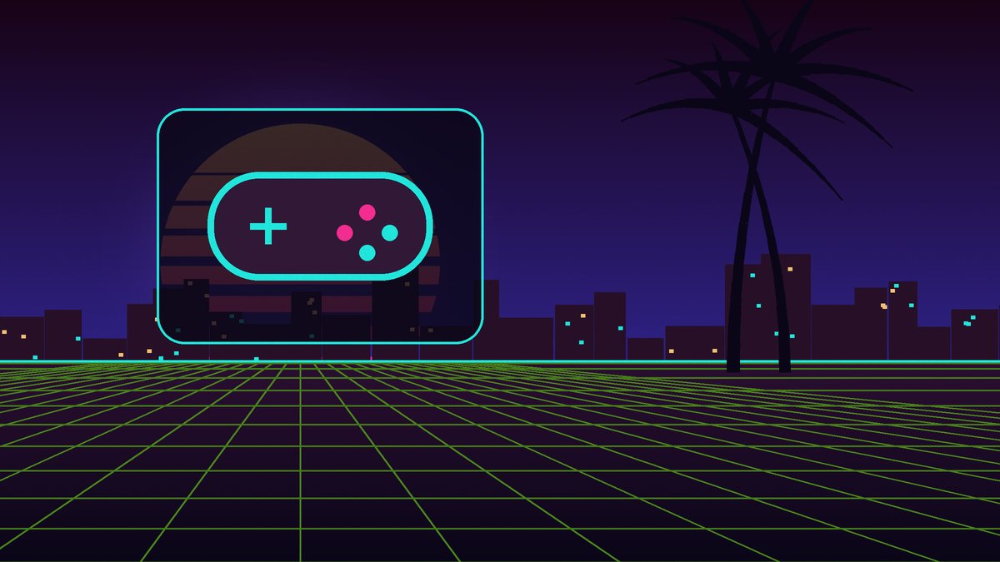

GTA 6 tiene 61 trucos, pero ninguno funciona hasta que acabas la historia
Ya se conocen los códigos, incluido el de 250.000 $. La trampa: se desbloquean al final, muchos piden superar un reto y desactivan los trofeos y el guardado.
Por Redacción Golpe Diario · Publicado el · Actualizado el

Qué ha pasado
Según la guía de PowerPyx, GTA 6 tiene 61 trucos en PS5 y Xbox Series X|S, repartidos en cinco categorías: 10 de jugador, 11 de combate, 21 para sacar vehículos, 3 de entorno y 16 filtros de pantalla. GamesRadar+, cuya guía sigue en curso, da la misma cifra y las mismas condiciones, y KeenGamer añade que solo 17 tienen el código conocido desde el estreno.
No funcionan desde el principio. La opción Cheats aparece en el menú al completar la historia de Jason y Lucia (pulsando R1 o RB hasta la pestaña Progress), y además cada truco pide su propio requisito. PowerPyx cuenta que la mayoría se abren mientras completas la lista del 100 %. Son hitos de juego: perder un nivel de búsqueda de tres estrellas un número de veces, completar retos de una categoría, lanzar granadas o pasar horas con tu pareja.
Algunos ejemplos: el chaleco antibalas exige 100 entrenamientos; la munición máxima, 25 medallas de bronce en los campos de tiro; la munición infinita, 25 de plata, y no recargar, 25 de oro. El coche Maibatsu Boomazoom se pide con 5 retos de compras, y el filtro Dollhouse, con 8 horas con tu pareja. Según PowerPyx, los trucos de 250.000 $ y de cambiar el tiempo solo piden haber acabado la historia.
Se meten en modo libre: arriba en la cruceta para sacar el móvil, L1 + R1 (LB + RB en Xbox) a la vez y el código con la cruceta. El de 250.000 $ es arriba, derecha, abajo, izquierda, arriba, izquierda, abajo, derecha. Solo funcionan los códigos de los trucos que ya has desbloqueado.
Y aquí está la trampa. Usar trucos desactiva los trofeos o logros y bloquea el guardado mientras hay uno activo. KeenGamer lo resume así: el dinero del truco de 250.000 $ se pierde, porque no se puede guardar. Su consejo es hacer un guardado manual antes de meter cualquier código y, al terminar, salir sin guardar para volver a una partida limpia. La lista tampoco está cerrada: PowerPyx deja muchos códigos con signos de interrogación y aún no conoce el requisito de uno de los vehículos, el MTL Pumper.
Qué significa para ti
- Si vas a por los trofeos o los logros, no actives trucos: en esa sesión se desactivan, igual que el guardado.
- Haz un guardado manual antes de meter un código y, cuando acabes de jugar con ellos, sal sin guardar: así vuelves a una partida limpia.
- No pierdas tiempo probando códigos al empezar: hasta que acabes la historia no hacen nada.
- Tampoco esperes los 61 el primer día: cada truco pide su reto, y para algunos hacen falta 100 entrenamientos o 25 medallas.
- La lista aún no está completa: quedan códigos por descubrir.
Lo tienes también en la guía: Primeros pasos en GTA 6: lo que conviene saber antes de empezar · Cómo ganar dinero en GTA 6 · Armas de GTA 6: las únicas, dónde conseguirlas y en qué orden · Trucos y consejos para el modo historia de GTA 6
Contrastado con: GamesRadar+ · PowerPyx · KeenGamer
Sigue leyendo
La caja fuerte de Chatfield Storage se abre con 5800, y hay más códigos que no piden pista
En Waxman Island hay un almacén con una caja fuerte, una pistola única y un superdeportivo morado. El código es 5800, y no es el único candado de Leonida que se abre sin tener que buscar la combinación.
El asalto al furgón blindado con Billy: 2.000 dólares, la moto y el camino exacto de huida
Billy, el de las carreras de motos del Thrillbilly Mud Club, te escribe unas horas después de su carrera para reventar un furgón blindado. La misión es opcional, cuenta para el 100 % y paga 2.000 dólares, aparte de la moto de cross con la que vas al golpe.
Siete sitios donde GTA 6 te regala un arma única, lanzacohetes incluido
Por el mapa de Leonida hay variantes únicas de armas en cabañas, barcos encallados y búnkeres, sin misión y sin pagar un dólar. Estas son las siete que coinciden en varias guías, con el sitio exacto, lo que hay que hacer en cada una y los tres códigos del puesto de Pelican Valley.